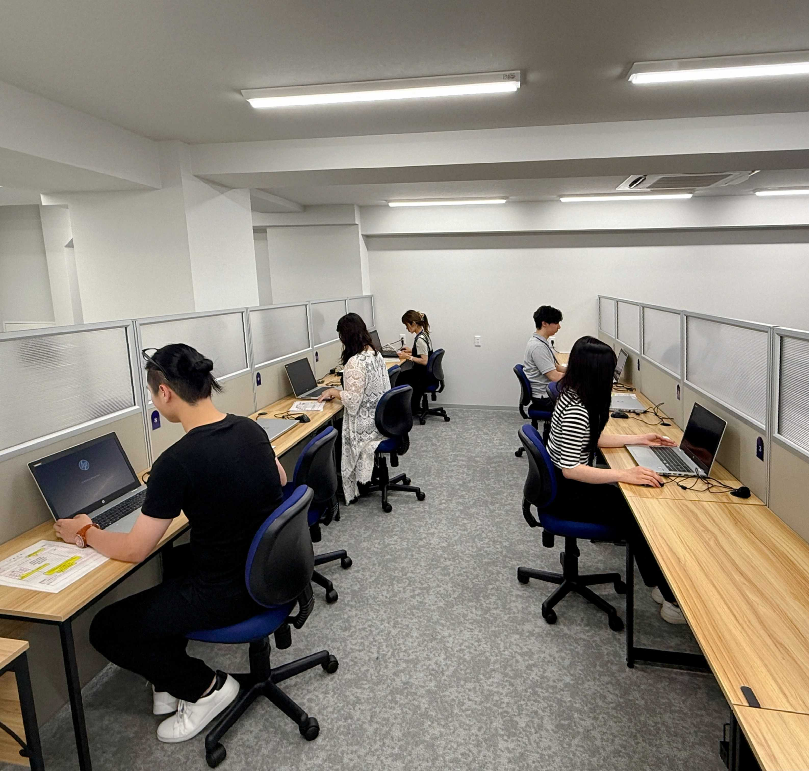
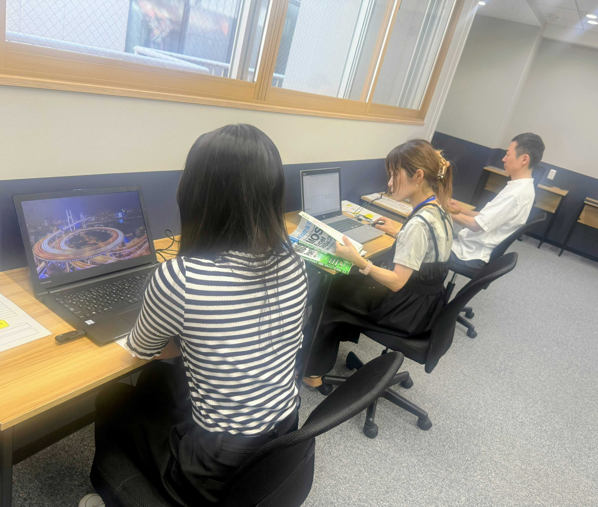
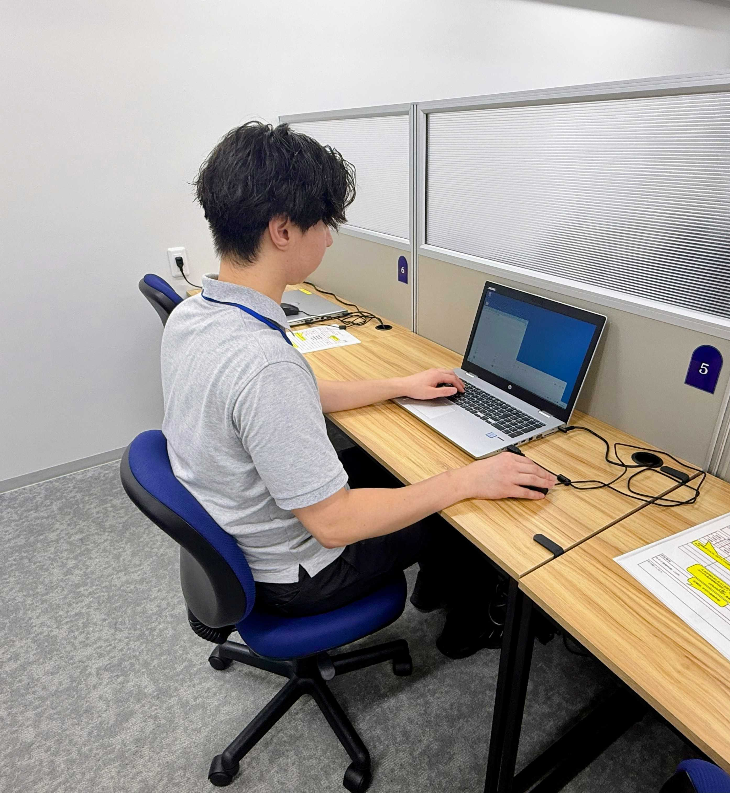

お仕事について
データ入力作業
PDFデータの商材情報を基にファイル名を変更するリネーム作業
リストアップ作業
企業からの発注に応じて企業情報をリスト化する作業
動画編集作業
映像素材をカット・編集し、テロップやBGMを加える編集作業
賃金例
Aさんの場合
週5日・1日5時間45分利用
賃金 158,000円/月
Bさんの場合
週4日・1日5時間利用
賃金 112,500円/月
Cさんの場合
週5日・1日5時間利用
賃金 132,000円/月
※時給1,200〜1,250円シフト制（週休2日）
※交通費一部補助支給あり
1日のスケジュール
（9:30勤務開始・実働5時間45分の場合）
- 9:30作業開始
- 11:30小休憩
- 11:45作業再開
- 12:30お昼休憩
- 13:30作業再開
- 15:30小休憩
- 15:45作業再開
- 16:15退勤



実際の作業風景☆
勤務時間
*時差出勤制
9時30分〜17時45分の間で最大実働5時間45分 時差出勤制度あり。
9時30分〜11時まで30分区切りで出勤時間を選べます。
ご利用までの流れ
STEP
1
見学
まずは事務所に来ていただき、職場の雰囲気やどんな仕事をしているかをゆっくり話せたらと思います。
STEP
2
体験
実際に仕事をしていただき、自分に合っているか、やっていけそうか体験していただけます。
STEP
3
面接
最寄のハローワークで紹介状をもらって、面接に来ていただければOKです。
STEP
4
申請
内定が決まったら、お住まいの市区町村で障害福祉サービスの申請手続きをしてください。
STEP
5
契約・利用開始
障害福祉サービスの受給者証が届いたら、契約して、実際に利用スタートとなります。